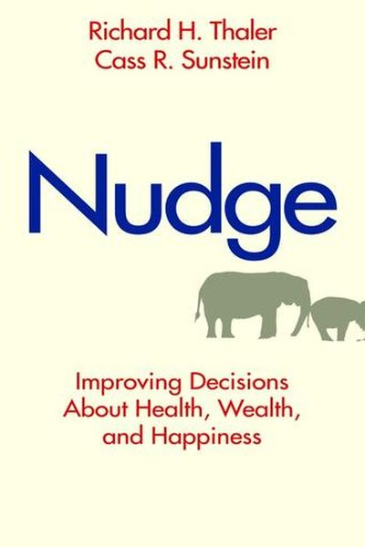

Library › Psychology & People
Nudge: Improving Decisions About Health, Wealth, and Happiness — Summary & Key Lessons

The Nobel Prize-winning book that proved small design changes produce big behavior changes — for yourself and for others.
📖 OPEN THE FULL INTERACTIVE BREAKDOWN →🌐 Read it in Hindi, Hinglish, Gujarati, Tamil & 22 more languages — free, with audio.
💡 The Big Idea
Richard Thaler won the Nobel Prize for this idea: humans are not the rational calculators of economics — we're predictably lazy, loss-averse and prone to inertia. But instead of fighting human nature, we can design around it: a 'nudge' is any small change in the environment that alters behavior predictably without forbidding anything or changing incentives. Choose the right default (the choice architect's superpower), and people save more, eat better, and opt in to what's good for them — while staying free to choose.
🧠 The 5 Key Lessons
Lesson 1: Choice Architecture: You're Already Designing Choices
The Two Systems
Thaler and Sunstein's foundation: humans run on two systems — the automatic (fast, lazy, emotional) and the reflective (slow, effortful, rational). Choice architecture is the design of the environment where choices happen: the order of options, the default, the framing. You can't opt out of choice architecture — every menu, form and screen is designed by someone. The question is whether it's designed well.
📖 Example: A cafeteria can arrange food to make fruit the easiest grab (placing it at eye level) without banning desserts — a nudge that changed eating without restricting freedom. Every store layout, app screen and form is already nudging you; the skill is noticing… Read the full example →
⚡ Do this: Audit one environment you control — your home screen, your kitchen, your desk. Rearrange ONE thing so the good choice is the easy choice.
Lesson 2: The Power of Defaults
The Power of Defaults
The single most powerful nudge is the default — what happens if you do nothing. Because of inertia (we're lazy) and loss aversion (changing feels risky), defaults stick: organ donation rates are ~4x higher in opt-out countries, and retirement savings participation jumps from 40% to 90%+ when enrollment is automatic. People keep the default, so set the default to the good outcome.
📖 Example: The famous cross-country data: Austria's opt-out organ donor rate is 99%, Germany's opt-in is 12% — same people, same culture, opposite defaults. In pensions, automatic enrollment turned non-savers into savers overnight without a single lecture. Read the full example →
⚡ Do this: Set your own defaults: automatic transfers to savings, auto-invest on payday, apps on the phone arranged for focus, healthy food at eye level. Design your defaults while you're rational.
Lesson 3: Loss Aversion: Frame It as a Loss
Loss Aversion
Losses hurt about twice as much as gains please — so the same fact framed as a loss changes behavior. 'You'll lose ₹10,000 a year in interest' beats 'you could earn more'; 'you lose 3 months of life per decade of smoking' beats 'you'll live longer.' The authors' lesson for designing your own motivation: frame your goals as what you'll LOSE by not acting.
📖 Example: Energy studies: telling households they were 'losing money' compared to neighbors changed usage more than generic appeals — and adding a sad-face emoticon to high users' bills produced another jump. The frame, not the fact, moved behavior. Read the full example →
⚡ Do this: Rewrite your top goal as a loss: 'If I don't ___, I lose ___ (money, health, time, respect).' Put it where you'll see it daily.
Lesson 4: Make It Easy: The Path of Least Resistance
Following the Herd
People do what's easy, and social proof steers them: we imitate others, especially in ambiguity ('everyone does it'). The nudger's twin tools: make the good behavior the easy behavior (remove friction), and make the good behavior the visible behavior (show others doing it). Friction is a tax on behavior — reduce it for what you want, raise it for what you don't.
📖 Example: Auto-enrollment plus a 'one-click' choice beat forms with 20 questions; the company that moved healthy snacks to the checkout aisle saw sales jump. And when hotels told guests 'most guests reuse their towels,' reuse rose ~26% — social proof as nudge. Read the full example →
⚡ Do this: Pick one goal and remove its friction: pay the gym fee upfront, lay out the running shoes, make the app 3 taps closer — and tell one friend, so 'others are doing it' includes you.
Lesson 5: Nudge Yourself: Be Your Own Choice Architect
An Offer You Can't Refuse
The book's final gift: you are the choice architect of your own life. Precommit (decide in advance, before temptation), set defaults while clear-headed, use deadlines (loss aversion loves a deadline), and give your future self fewer options. The authors show that the best nudges are designed by people who know their own predictable weaknesses.
📖 Example: Thaler's own 'Save More Tomorrow' program lets employees commit future raises to savings — precommitment that sidesteps today's loss aversion, lifting savings rates dramatically. Applied personally: book the trainer, set the auto-transfer, announce the… Read the full example →
⚡ Do this: One precommitment this week: sign up, schedule, or publicly announce a future action you know today-you will resist when it arrives.
✅ 5-Step Action Plan
- Audit one environment; make the good choice the easy choice.
- Set 3 personal defaults while you're thinking clearly.
- Reframe your top goal as a loss — display it daily.
- Remove friction from one goal; add friction to one bad habit.
- Make one precommitment this week.
💬 Best Quotes from Nudge: Improving Decisions About Health, Wealth, and Happiness
- “A nudge is any aspect of the choice architecture that alters people's behavior in a predictable way without forbidding any options.”
- “Everything matters — small details can have large effects.”
- “If you want to encourage some activity, make it easy.”
Interactive version: mark lessons as read, listen in your language, share quote cards.